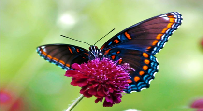

Dünyanın En Güzel Günü

Bir vakitler kudretli bir kraliçe vardı. Bahçesinde yılın her mevsiminde, dünyanın her yerinde yetiştirilen en güzel çiçekler bulunurdu.
Ama kraliçe en çok gülleri severdi. Bu sebepten yabani güllerden tutun da kokuları sade yahut taşralarda yetiştirilen
en güzel güllere kadar her çeşit gül, bahçesinde bulunurdu. Bunlar sarayın duvarlarında yükselir, sütunlara, pencere pervazlarına sarılır,
yollarda serpilir, yayılır, bütün salonların tavanlarından hevenklerle aşağı sarkar, hepsi renkçe, kokuca, görünüşçe birbirleriyle yarışırlardı.
Ama sarayda buna rağmen yas hüküm sürüyordu. Çünkü kraliçe ölüm yatağındaydı. Hekimler de mutlaka öleceğini haber veriyorlardı.
Hekimler arasında en bilgesi: "Gene de bir kurtuluş yolu var onun için, dedi, ona en yüce, en temiz aşkın sembolü olan
dünyanın en güzel gülünü getiriniz. Bu gülü ölmeden önce görebilirse ölmez."
Bunun üzerine uzaktan, yakından, genç ihtiyar herkes bahçelerinde yetiştirdikleri en güzel güllerle birlikte saraya sökün ettiler.
Ama getirdikleri arasında istenen gül yoktu. Onun aşk bahçesinden derilmiş olması lâzımdı. Ama bu bahçedeki güller içinde hangisi en yüce,
en temiz aşkın sembolüydü?
Şairler dünyanın en güzel gülünü övüyor, hepsi övgülerinde kendi gülünü anıyorlardı.
Aşkla çarpan
bütün kalplere bir haber ulaşmıştı, her yaşta, her sınıftaki insanlara bu haber ulaşmıştı.
Bilge hekim: "Daha hiç kimse o çiçeği anmadı,
dedi, kimse onu bütün ihtişamı içinde yetiştiren yeri söylemedi. Güller kokularını daima şarkılarla, masallarla yaymak isterler.
Ama gene de Romeo ile Jüliyet'in tabutuna konulan güllerden değil o, Winkelried'in kanlı mızraklarından fışkıran güllerden de değil.
Hiçbir ölümden daha güzel, hiçbir gül o güllerden daha kırmızı olmamasına rağmen vatan için ölen kahramanların kanından fışkıran güllerden
değil o. Adamın yıllarca odasına
kapanıp tek başına uykusuz gecelerini, gençliğini harcayarak meydana getirdiği harika çiçek de değil, ilmin sihirli çiçeği de."
Bir gün yanında küçük çocuğuyla birlikte kraliçenin odasına giren bahtlı bir ana: "Ben onun yetiştirildiği yeri biliyorum, dedi. Dünyanın
en güzel gülünün bulunduğu yeri, en yüce, en temiz aşkı dile getiren, onun sembolü olan gülün bulunduğu yeri biliyorum ben. Bu gül benim
sevimli çocuğum uykusundan daha kuvvetlenmiş olarak gözlerini açınca, bana kalbindeki bütün sevgi ile gülümserken al al yanaklarında açan güldür."
"Güzel bir güldür bu, dedi bilge, ama ondan daha güzeli de var."
Kadınlar arasından biri atıldı: "Evet, ondan çok daha güzeli var, dedi.
Ben gördüm onu. Ondan daha yüce, daha kutlu bir gül hiçbir yerde bulunmaz! Ama rengi soluktu, Hind güllerinin yaprakları gibi soluk.
Ben onu kraliçenin yanaklarında gördüm. Krallık tacını başından çıkarmış, hasta çocuğunu kederden ürkmüş gecenin içinde kolları arasında kendi
taşıyor, çocuğa ağlıyor, onu öpüyor, korku saatinde Tanrıya yalvaran bir ana gibi, onun için dua ediyordu."
"Matemin ak çiçeği kutsaldır,
kudreti içinde çok güzeldir, eşsizdir! Ama gene de kurtuluşu sağlamaz" dedi bilge. Bunun üzerine ihtiyar, dindar piskopos:
"Hayır, dedi, dünyanın
en güzel gülünü ben gördüm, Tanrı mihrabının önünde, bir meleğin belirişi gibi parıldıyordu. Genç kızlar Tanrı sofrasına gidiyor,
vaftiz bağlarını tazeliyorlardı. İşte o zaman taze yanaklarında güller yanıyor, güller soluyordu onların. Aralarından bir genç kız
ayağa kalktı, ruhunun bütün arılığı, bütün aşkıyla Tanrısına doğru gözlerini kaldırdı. Bu en temiz, en yüce aşkın dile gelişiydi!"
"Tanrının takdisi onun üzerine olsun, dedi bilge, ama gene de aranızdan hiçbiri dünyanın en güzel gülünü anmadı."
Bu sırada odaya bir çocuk girdi.
Kraliçenin küçük oğluydu bu. Gözleri yaşla dolu, yanakları ıslaktı. Atlas ciltli, gümüş tokalı, açık, büyük bir kitap getiriyordu.
"Anne, dedi çocuk, bak dinle, ne okudum ben." Bunu söyleyerek yatağın kenarına oturdu, kitaptan, kendini insanların kurtuluşu için,
hatta henüz doğmamış nesiller için feda etmiş olandan bahseden bir yer okumaya başladı. Bundan daha yüce bir aşk yok!
O zaman kraliçenin
yanaklarından gül pembesi bir renk geçti. Gözleri büyüdü, durulaştı. Çünkü kitabın yaprakları arasından dünyanın en güzel gülünün, çarmıh
üstündeki İsa’nın kanından tomurcuklanan gülün yükseldiğini görmüştü.
"Görüyorum onu, dedi. Bu gülü, dünyanın en güzel gülünü gören, hiçbir zaman ölmeyecek!"